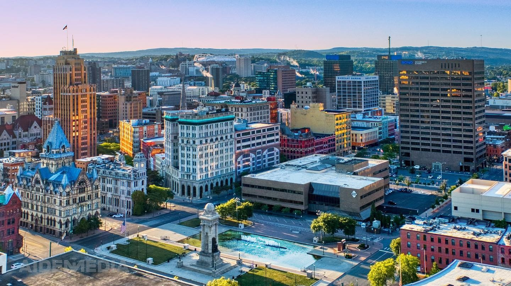

Deep Dives
Longer reads from our team.
When you want more than the highlights, our staff guides go deeper.

Destiny USA
12 things to do near Destiny USA
Beyond the mall — the best stops within minutes for a full day out.

Dining
Where to eat in Liverpool, NY
Ten restaurants our front desk sends guests to most often.

Airport
Airport hotels near SYR
Flying through Syracuse Hancock? What to look for and why we're a smart pick.